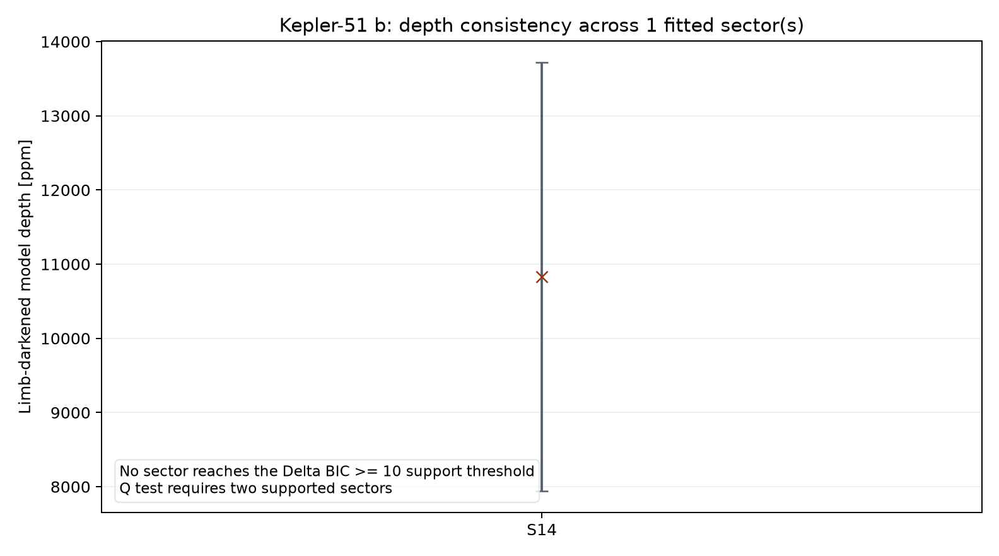
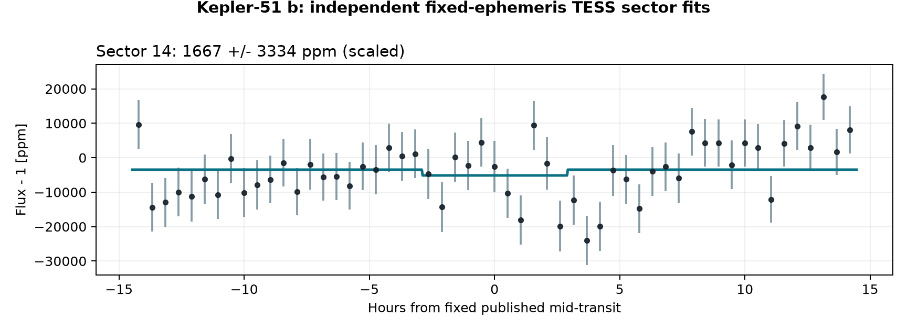

Data source notes
SHA-256, LF-normalised text
f4d278e041541dbd727a9846619c79b57d8f3b59aa362c33f18fa1a73bb16503Browse 10 versioned evidence files. Table previews simply display stored rows. Consult the project report for the source, processing steps, and inference assumptions.


f4d278e041541dbd727a9846619c79b57d8f3b59aa362c33f18fa1a73bb16503| pl_name | hostname | ra | dec | pl_orbper | pl_tranmid | pl_trandur |
|---|---|---|---|---|---|---|
| Kepler-51 b | Kepler-51 | 296.4797624 | 49.9376486 | 45.154 | 2455714.5977 | 5.797 |
14e0353a24096a61ea5a94d36b735876730c55eba0cedb5f59b568ee034d98f799c0e425395d9e9c95e8f51e6c5405743125d927fae75f3568b556921ca1a13d3f35e36512cbdec9bb7bf3ef432657ee024453c2c2687230be6c8b8420fb6fce| quantity | value | unit |
|---|---|---|
| sector | 14 | TESS sector |
| period_days | 45.154 | days; NASA Exoplanet Archive |
| published_duration_hours | 5.797 | hours; NASA Exoplanet Archive |
| a_over_rstar | 57.5096221277 | fixed from saved a and stellar radius |
31af401dc32e1974935c7eec33943bcb719b0df500058b7b6b99c26c71d8b228| sector | filename | transit_events | n_points | transit_supported | delta_bic | timing_shift_hours |
|---|---|---|---|---|---|---|
| 14 | tess2019198215352-s0014-0000000027846348-0150-s_lc.fits | 1 | 1038 | False | -4.822523863 | 3.477873707 |
3add726a49da97fc4cdcd55bfb29cd3e6b76fb72dbe110717ca9d8b3c53549c12d0a751725bb54539757fd09073746b072da98be816fa0f206de7f4eb72a4dd8905848f00772254895b6dc9c1298619fd4c6c4ff5cb6cd770f06382012543ebc21438b3bc7ba4ea08d534b79ff6c4d7cac82e2c6662275684ed3dee96a54fcfaa04e0be15061a16c616676dd84f947a7ae5415610097424dbf7dd8e883cfe8cbSHA-256 values verify the stored files. They do not independently validate the scientific analysis. Rebuild this page with python scripts/evidence_catalog.py followed by python scripts/render_evidence_page.py.